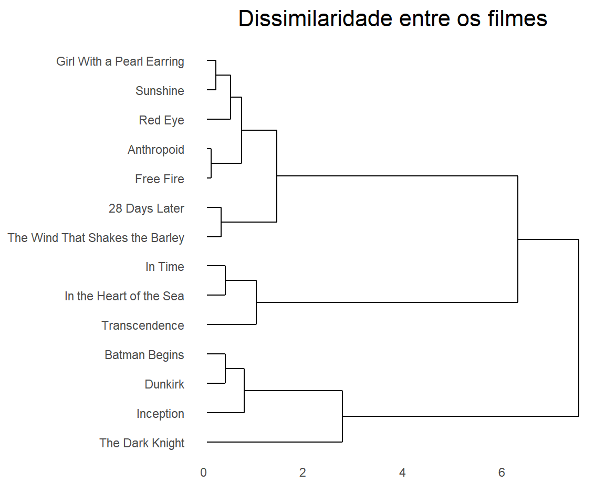

Cillian Murphy - Os 3 tipos de filme de um grande ator
Tendo atuado em mais de 30 filmes desde 1998, Cillian Murphy se destacou em 2005 no papel de Espantalho a.k.a Dr. Jonathan Crane em Batman Begins, transformando-se em um grande ator de Hollywood e firmando uma parceria duradoura com o cineasta Christopher Nolan.
Tendo em vista seu sucesso, irei realizar uma série de análises descritivas em cima de sua filmografia, levando em conta os dados presentes no Rotten Tomatoes.
Visão Geral
## Observations: 14
## Variables: 5
## $ avaliacao <int> 92, 68, 66, 43, 20, 35, 86, 94, 76, 88, 79, 84, 72, 87
## $ filme <chr> "Dunkirk", "Free Fire", "Anthropoid", "In the Heart...
## $ papel <chr> "Actor", "Chris", "Josef Gabcík", "Second Mate Matt...
## $ bilheteria <dbl> 188.1, 1.8, 3.0, 19.1, 23.1, 36.0, 292.6, 533.4, 3....
## $ ano <int> 2017, 2017, 2016, 2015, 2014, 2011, 2010, 2008, 200...Com uma rápida olhada nos dados é possível ver que o Rotten Tomatoes conta com apenas 14 dos 32 filmes que constam em sua página da wikipédia e portanto irei trabalhar apenas com esses.
Avaliação e bilheteria
ggplotly(filmes %>%
ggplot(aes(x = avaliacao, y = bilheteria, label = filme, label2 = ano)) +
geom_point() +
theme_bw() +
ggtitle("Bilheteria (em Doláres) vs Avaliação do Rotten Tomatoes") +
theme(plot.title = element_text(hjust = 0.5)), tooltip = c("label", "label2"))Com uma lista extensa de filmes, é fácil de perceber que suas avaliações transitam entre quase os 100% de aprovação e também chega a beirar o zero, tendo pontos por toda a extensão do gráfico, seria possível criar subgrupos de filmes levando em conta as sua avaliações? E quanto a suas bilheterias? Fácilmente podemos ver que grande parte está abaixo dos 100 milhões.
Agrupamento
Tendo em mente a existência de diferentes subgrupos de filmes, eu irei realizar um processo de agrupamento nos dados e então decidirei quantos subgrupos existem e quais são eles, mas antes é necessário entender que a presença de escalas diferentes para as avaliações e bilheterias pode comprometer o processo de agrupamento e portanto usarei a escala de log10 para a bilheteria.
Definindo grupos
agrupamento <- filmes %>%
mutate_at(vars(bilheteria, avaliacao), funs(scale)) %>%
as.data.frame() %>%
column_to_rownames("filme") %>%
select(avaliacao, bilheteria) %>%
dist(method = "euclidean") %>%
hclust(method = "ward.D")
get_grupos <- function(agrupamento, num_grupos){
agrupamento %>%
cutree(num_grupos) %>%
as.data.frame() %>%
mutate(label = rownames(.)) %>%
gather(key = "k", value = "grupo", -label) %>%
mutate(grupo = as.character(grupo))
}
ggdendrogram(agrupamento, rotate = T, size = 2, theme_dendro = T) +
labs(x = "", y = "") +
ggtitle("Dissimilaridade entre os filmes") +
theme(plot.title = element_text(hjust = 0.5))
Através da visualização do dendograma é possível ver a formação de alguns subgrupos, Anthropoid e Free Fire formam um grupo com 2 componentes, por exemplo. A medida que o gráfico avança para a direita o número de grupos vai diminuindo, porém os filmes em um mesmo grupo não passam a ser tão próximos entre si. Eu diria que parar com 3 é uma boa escolha.
Plotando grupos
atribuicoes = get_grupos(agrupamento, num_grupos = 1:6)
atribuicoes = atribuicoes %>%
left_join(filmes, by = c("label" = "filme"))
ggplotly(atribuicoes %>%
filter(k == 3) %>%
ggplot(aes(x = avaliacao, y = bilheteria, label = label, label2 = ano)) +
geom_point(aes(color = grupo), show.legend = FALSE) +
theme_bw() +
ggtitle("Os 3 tipos de filme de Cillian Murphy") +
theme(plot.title = element_text(hjust = 0.5), legend.title=element_blank()), tooltip = c("label", "label2"))Através do gráfico acima é possível ver facilmente os 3 grupos definidos com a ajuda do dendograma e como eles estão posicionados.
O primeiro grupo trata-se dos grandes fracassos, filmes que se mostraram um fiasco em termos de crítica e bilheteria, passando sequer dos 50% de aprovação e provando que nem só de sucessos os grandes atores vivem. O maior representante desse grupo é Transcendence, um filme de ficção científica com um ótimo elenco, mas que se mostrou um desastre em roteiro.
Logo em seguida as apostas, filmes que tiveram avaliações ótimas e até excelentes entre a crítica especializada como The Wind That Shakes The Barley, mas que terminaram não caindo nas graças do público, faturando menos de 100 milhões e mostrando que nem sempre bons roteiros ou ótimas atuações podem salvar um filme do fracasso nos cinemas.
Por último, os Blockbusters, filmes que além de terem sido um sucesso entre a crítica também tiveram um ótimo faturamento. Frutos de uma parceria entre Murphy e Nolan que começou em 2005 com o primeiro filme da trilogia “O cavaleiro das trevas” e dura até hoje, tendo o excelente Dunkirk como o mais recente filme do diretor Christopher Nolan, no qual Cillian atua no papel de um soldado traumatizado pela guerra.